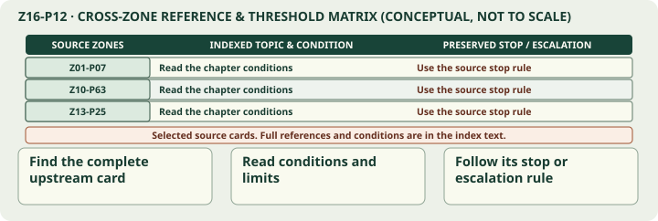

Z16-P12 · Field reference atlas · New manuscript
Consolidated Emergency Communication and Agency Referral Directory
Separate life-threat 911 activation, Poison Help 1-800-222-1222, utility leak lines, and MN DNR wildlife, TIP reporting across all zones.
When it applies · Quick offline lookup of the right authority channel during any emergency or field incident.
Equipment · Full offline reader (Z01, Z05, Z06, Z07, Z10, Z11, Z13, Z15), primary zone cards, and local emergency and agency references.

Actions
- Dial 911 immediately for any life-threatening trauma, chest pain, breathing trouble, fire, CO alarm evacuation, gas leak (from outside), drowning, or violent threat (Z01-P16, Z10-P01, Z13-P26).[A09, T08, M01, U08]
- Dial Poison Help (1-800-222-1222, 24, 7) immediately for suspected toxic plant, mushroom, chemical, or bleach-mixing exposures (Z05-P135, Z10-P61, Z13-P54) without waiting for symptoms.[A09, B09, U19]
- Route wildlife poaching, illegal, abandoned traps, injured wildlife, or hazardous animal encounters non-confrontationally to MN DNR TIP (1-800-652-9093) or licensed wildlife rehabilitators (Z06-P47, Z07-P20, Z07-P21), and pre-plan offline, PLB, NOAA radio backups where cell service fails (Z11-P56).[A09, H15, L06, N08]
Failure recognition · Calling a non-emergency wildlife or utility line during an airway or CO emergency—or lacking offline emergency numbers when cell towers fail—delays lifesaving response.[A09, T08, B09]
Verify · Local county dispatch, gas, electric utility, emergency vet, Poison Help, and DNR contacts are recorded offline before travel.[A09, T08]
Stop or change course · Stop troubleshooting remotely when life-threat red flags exist; activate 911 or registered PLB, SOS immediately.[A09, M01, N08]
Evidence and editorial notes
- A09 · Minnesota Poison Control System · Poison Help 1-800-222-1222 and Regional Plant/Mushroom Guidance (Current web edition)
- Section: Consolidated emergency communication, reporting, and referral directory · Conditions: Cross-zone emergency escalation across Z01, Z05, Z06, Z07, Z10, Z11, Z13, Z15
Support: Emergency lookup tables separate 911 life-threat activation, Poison Help 1-800-222-1222, utility leak/outage lines, and DNR wildlife/TIP reporting.
Limitations: Cell coverage fails in remote areas; pre-plan offline communication and backup evacuation routes. · Conflicting evidence: None noted.
Editorial note: Standardizes Z16 emergency contact index. · Specialist reviewer: EMS and emergency communications reviewer
Primary source · checked 2026-11-25 - B09 · Minnesota Poison Control System · Poison Help 1-800-222-1222 and Regional Plant/Mushroom Guidance (Current web edition)
- Section: Minnesota Poison Control 1-800-222-1222 immediate referral · Conditions: Any suspected toxic plant, berry, root, or mushroom ingestion or severe dermal exposure
Support: Call 1-800-222-1222 immediately (or 911 for breathing difficulty, collapse, seizures, or altered alertness); do not wait for delayed symptoms.
Limitations: Never induce vomiting or administer home remedies unless explicitly instructed by Poison Control or EMS. · Conflicting evidence: None noted.
Editorial note: Mandatory Z05 poison-response escalation. · Specialist reviewer: Clinical toxicologist / Poison Center
Primary source · checked 2026-11-25 - H15 · Minnesota DNR · Turn In Poachers (TIP) and Conservation Officer Reporting (Current web edition)
- Section: Turn In Poachers (TIP) and wildlife incident reporting · Conditions: Suspected wildlife violations, injured game, or unsafe incidents
Support: Observe from a safe distance, record location, time, descriptions, and license plates without confronting suspects, and report to MN DNR TIP or Conservation Officers.
Limitations: Do not pursue armed or hostile individuals or disturb physical evidence. · Conflicting evidence: None noted.
Editorial note: Defines Z06/Z07 non-confrontational incident reporting. · Specialist reviewer: Conservation enforcement reviewer
Primary source · checked 2026-11-25 - L06 · Minnesota DNR · Injured, Orphaned, or Trapped Wildlife Reporting (Current web edition)
- Section: Reporting injured, orphaned, or accidentally trapped wildlife · Conditions: Discovering a trapped or injured wild animal in the field
Support: Maintain safe distance to avoid bites, rabies, and stress to the animal; note GPS/location and contact a Conservation Officer or licensed wildlife rehabilitator.
Limitations: Never attempt barehanded release of distressed carnivores, raptors, or large mammals. · Conflicting evidence: None noted.
Editorial note: Establishes Z07 incidental-capture reporting protocol. · Specialist reviewer: Wildlife rehabilitator and DNR officer
Primary source · checked 2026-11-25 - M01 · American College of Surgeons · STOP THE BLEED Training Course (current web edition)
- Section: Ensure Your Own Safety; Find Life-Threatening Bleeding; Compress · Conditions: Lay responder encountering severe external hemorrhage
Support: Ensure scene safety first, call 911, expose the wound to locate life-threatening bleeding, and apply firm continuous direct pressure with clean gauze or cloth.
Limitations: Does not replace formal hands-on Stop the Bleed training or EMS trauma care. · Conflicting evidence: None across ACS/ARC guidelines.
Editorial note: Separates life-threatening arterial/venous hemorrhage from minor scrapes. · Specialist reviewer: Wilderness medicine and trauma EMS
Primary source · checked 2026-11-24 - N08 · NOAA NCEI · Magnetic Declination (current web edition)
- Section: NOAA Magnetic Declination > definition and true-bearing conversion · Conditions: Using magnetic baseplate compasses near metal, electronics or iron-rich rock
Support: Declination is between true and magnetic north and varies by location and time. Grid convergence is separate. A device may already apply a correction.
Limitations: NOAA definition does not establish site-specific interference distances or diagnosis of magnetic anomalies. · Conflicting evidence: Aligns with B014-P13 and B014-P14.
Editorial note: Grounds declination conversion, metal-clearance and magnetic-anomaly cards. · Specialist reviewer: Navigation and geophysics safety
Primary source · checked 2026-11-24 - T08 · NOAA NCEI · Magnetic Declination (current web edition)
- Section: Definition and bearing conversion · Conditions: Trip planning with a map and compass
Support: Declination varies by date and geographic position. Determine the map reference and current local value.
Limitations: Outdated map margins can have meaningful declination drift over decades. · Conflicting evidence: None; retained for navigation reconstructions.
Editorial note: Preserved for Z11 continuity. · Specialist reviewer: Navigation and search and rescue
Primary source · checked 2026-11-24 - U08 · FEMA / Ready.gov · Water Storage and Emergency Supply (current web edition)
- Section: Water > Emergency Household Supply, Shutoff, and Alternate Indoor Sources · Conditions: Household plumbing disruptions, water-main breaks, or winter freeze outages
Support: Store at least 1 gallon per person per day for several days (two weeks where feasible for extended outages), know the main water shutoff valve location, and recognize clean indoor water-heater reserve boundaries only after shutting off power/gas and confirming supply safety.
Limitations: Never use water from radiators, hot-water boilers, or chemically treated toilet tanks for drinking. · Conflicting evidence: None; complements CDC-S (W06, W14).
Editorial note: Covers household water shutoffs, pipe-freeze prevention, and safe indoor reserves. · Specialist reviewer: Plumbing safety and drinking-water public health
Primary source · checked 2026-11-24 - U19 · CDC · Cleaning and Disinfecting with Bleach (2024)
- Section: Precautions; never mix · Conditions: Household cleaning and disinfection
Support: Never mix bleach with other cleaners or disinfectants. Follow product labeling.
Limitations: Protecting and decontaminating exposed people requires Poison Control or emergency guidance. · Conflicting evidence: See A02 claim audit for boundaries.
Editorial note: Added in A02 to separate a consequential source boundary. · Specialist reviewer: Environmental health and poison safety
Primary source · checked 2026-11-25
Source lineage · New manuscript (Z16 P20 contacts index) · Classification · New manuscript.